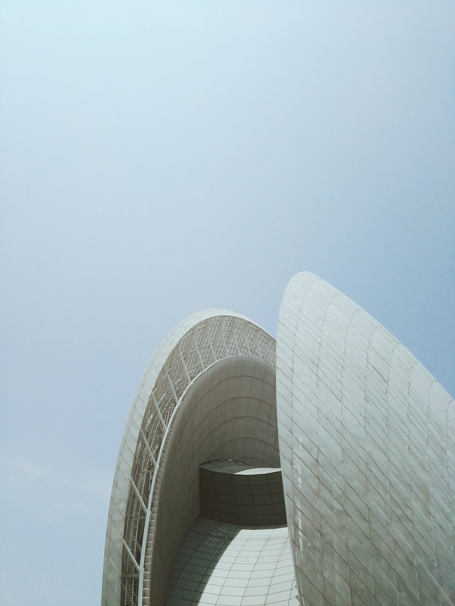

architecture page web (APW) is leading... make sense and...for creating web page Architecture (Latin architectura, from the Greek ἀρχιτέκτων arkhitekton "architect", from archi "chief" and tecture "creator") is both the process and the product of planning, designing, and constructing buildings or other structures. 
Architectural works, in the material form of buildings, are often perceived as cultural symbols and as works of art. Historical civilizations are often identified with their surviving architectural achievements.